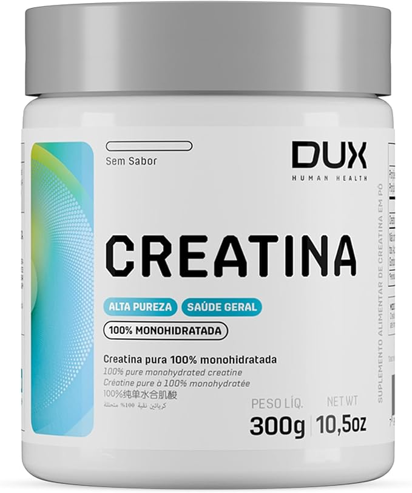
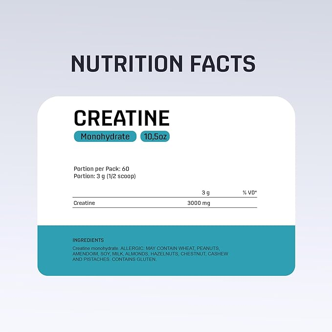
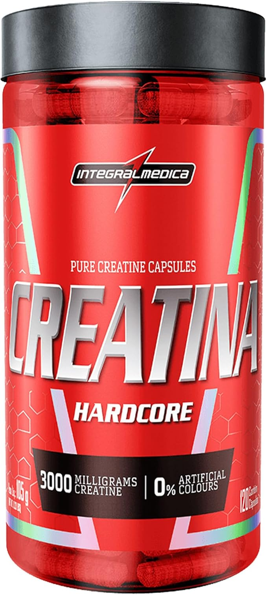
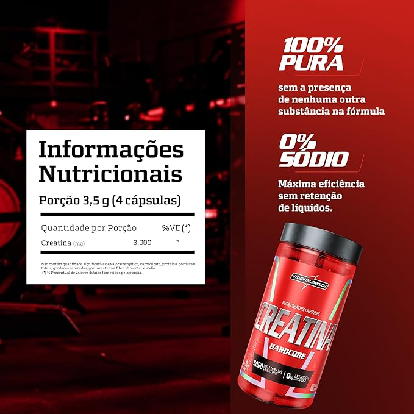

Como escolher a creatina ideal para você

Há muito tempo odiada e hoje amada, até mesmo idolatrada, trago para vocês um guia completo falando tudo que você precisa saber para escolher a creatina ideal. O suplemento mais estudado de todos os tempos, muito por causa das especulações e fakenews da época em que nem conhecíamos esse termo.
Atualmente, a creatina é um dos suplementos mais utilizados e pesquisados, com inúmeros benefícios comprovados.
Mas afinal, o que é a creatina?
A creatina é uma substância natural presente em alimentos como carne e peixe, e também pode ser sintetizada pelo corpo. Não! Não dá pra atingir a meta de creatina diária apenas comendo essas fontes de proteína, infelizmente. A forma mais prática e econômica é consumir creatina por meio da suplementação.
Quais são os benefícios de consumir creatina?
A creatina é famosa por aumentar a força, melhorar o desempenho físico e estimular o crescimento muscular. E não, não estou repetindo a mesma coisa de três formas diferentes. A creatina realmente aumenta a força! Conforme você consome creatina, ela ajuda a levar mais água para dentro dos seus músculos, permitindo que você exerça ainda mais força.
Com mais força, você naturalmente melhora seu desempenho nos treinos, levantando mais peso. Isso resulta em maior dano muscular, que, por sua vez, leva a mais hipertrofia. Ou seja, é o ciclo perfeito porque isso não vai te fazer mal, se é que você me entende.
Mas seus benefícios não param por aí, além de te ajudar a ficar AESTHETIC!
, a creatina pode ainda melhorar seu desempenho cerebral. Mas calma, você não vai se transformar no Eddie do filme Sem Limites
ou na Lucy do filme... Lucy
, é... eu sinto muito. Até hoje, o que foi observado em relação à melhora cerebral é que ela ajuda a fornecer energia para o cérebro quando você está cansado, mas não melhora nada de forma significativa. Mas caso você tome e perceba que está ficando muito mais inteligente, parabéns, esse é o efeito placebo.
Como escolher a creatina ideal?
Sem mais delongas, vamos ao que interessa: como escolher a creatina ideal, afinal? Basicamente, existem dois tipos de creatina vendidas em larga escala no mercado nacional.
A primeira é a creatina pura. Na tabela nutricional, você verá escrito apenas: creatina. Ela é literalmente pura, sem mais nada. É simples e direta, como deve ser.
A segunda opção pode parecer uma pegadinha das marcas para vender a mesma quantidade por preços menores, mas não é bem assim. Essa creatina não é pura, pois em sua composição vem junto carboidratos. Isso pode ser um problema para quem está em dietas low carb. Então, fique de olho nas tabelas nutricionais, principalmente quando encontrar preços maravilhosos.
Além disso, existem outras formas de creatina, como a creatina micronizada, que é uma versão mais fina da creatina pura. Ela é absorvida mais rapidamente pelo corpo e pode ser uma boa opção para quem tem dificuldade em digerir a creatina normal. No entanto, não há evidências científicas suficientes para afirmar que ela é superior à creatina monohidratada.
Outra opção, que na verdade nem chega a ser tão diferente assim, é a creatina em cápsulas. Nesse caso, ela pode ser tanto micronizada quanto monohidratada. É uma boa opção para quem não gosta do sabor ou da textura da versão em pó.
Critérios de avaliação para esta lista
Nesta lista, vou focar apenas nas creatinas puras, sem misturas. O motivo é simples: as versões misturadas podem até parecer um bom negócio à primeira vista, mas, quando você faz as contas, geralmente a grama da creatina misturada acaba saindo mais cara ou, no máximo, pelo mesmo preço da pura. É aquela velha história: o barato pode sair caro!
Um ponto importante que ainda não mencionei sobre as creatinas é que elas estão no topo da lista dos suplementos mais falsificados no mundo fitness. Devido à alta procura, muitas marcas acabam sendo vítimas de falsificação ou, pior ainda, algumas próprias marcas ocultam ingredientes na tabela nutricional. Um dos truques mais comuns é misturar creatina com amido de milho. Pois é, você pode estar pagando caro por um suplemento que, na verdade, é quase um mingau. Por isso, é fundamental escolher com cautela tanto a marca quanto a loja ou vendedor onde você vai comprar sua creatina.
Levando em conta tudo que foi visto até aqui, nesta lista vou incluir apenas creatinas de marcas renomadas, sem histórico de escândalos, de vendedores ou lojas confiáveis. Ah, e claro, sempre com o melhor custo-benefício, porque ninguém aqui quer pagar caro por mingau, né?
Creatina Monohidratada - DUX

Ver produto

A Creatina Monohidratada da DUX Human Health é 100% pura, sem aditivos, garantindo máxima absorção e eficácia. É a escolha ideal para quem busca aumentar a força e ganhar massa muscular de forma eficiente.
Produzida sob rigoroso controle de qualidade a creatina da DUX Human Health é feita com ingredientes cuidadosamente selecionados e uma com uma pureza superior as demais.
Marca
Fundada em 2015, a DUX rapidamente conquistou seu espaço no mercado graças à qualidade excepcional de seus produtos. Como uma marca nacional, ela se destaca por oferecer excelência e confiança, ganhando a preferência de quem busca resultados consistentes.
Creatina Monohidratada - Integralmedica

Ver produto

A creatina hardcore em cápsulas é ideal para quem busca praticidade e eficiência na suplementação. Esse suplemento aumenta os níveis de creatina muscular, fornecendo energia rápida para treinos de alta intensidade e permitindo um melhor desempenho em atividades que exigem explosão muscular.
Com a creatina 100% pura em cápsula, você pode suportar cargas mais pesadas, prolongar seus treinos e otimizar o crescimento muscular. Além de ser essencial para atletas de musculação, a creatina em cápsulas também auxilia em esportes que demandam potência e resistência, como corridas, ciclismo e crossfit.
Marca
Com mais de 40 anos de história, a Integralmedica é pioneira em suplementação esportiva no Brasil. Sempre inovando, a marca oferece produtos de alta qualidade para quem busca melhorar o desempenho nos treinos, seja na academia, corrida ou outras atividades.